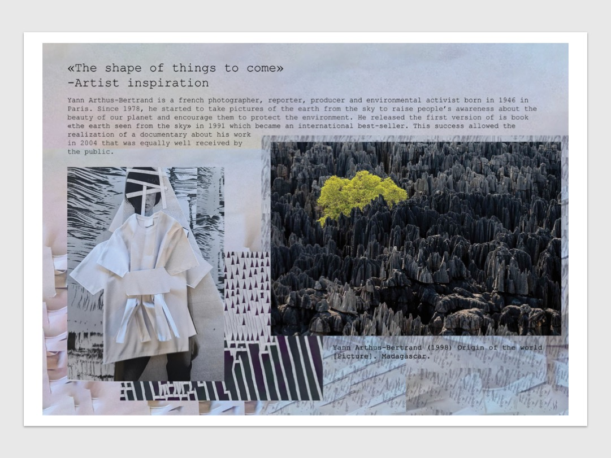
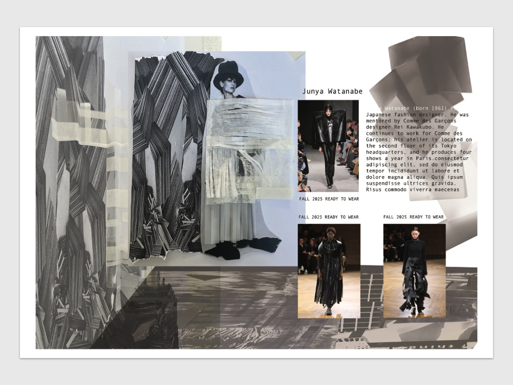
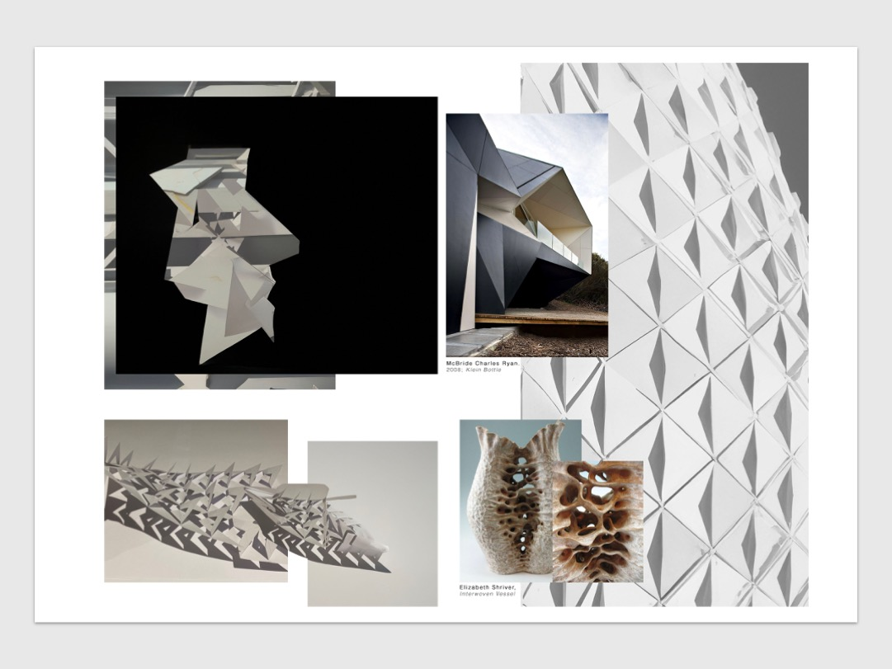
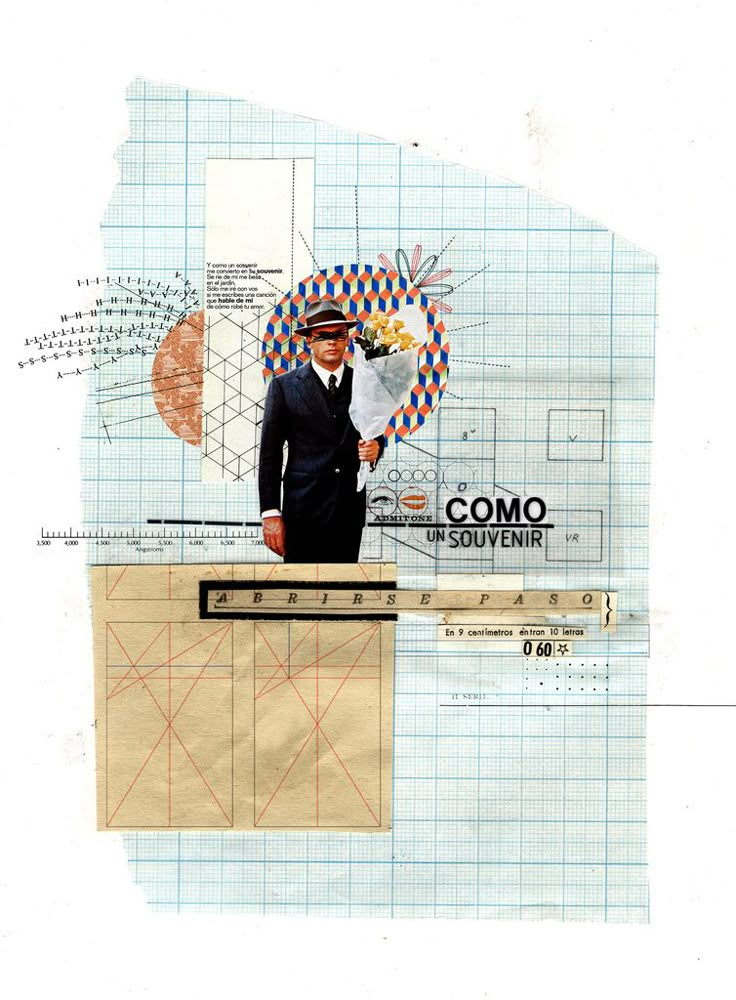
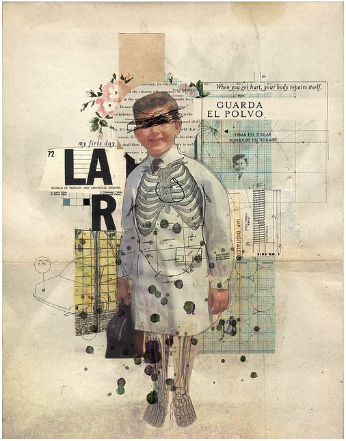
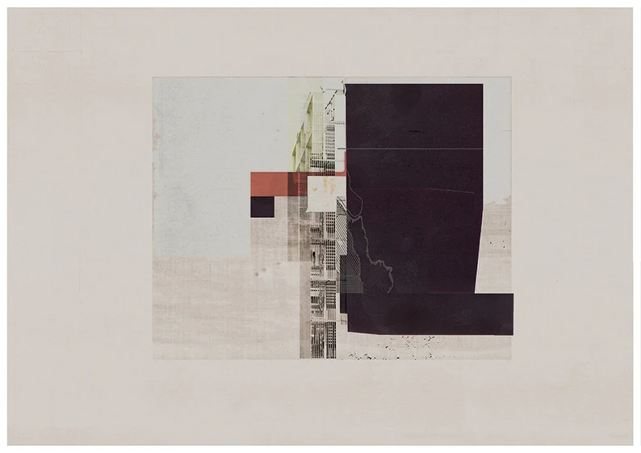

Edit your photos and scans in Photoshop so they look clean and portfolio-ready
Create dynamic A3 layouts using your edited images and organic layout techniques
Export as PDF and upload your work to Padlet
Look at these student examples before you start — notice the clean editing, clear layout, and how text and images work together.



These artists use scale, placement, and mixed media to tell visual stories. Notice how they vary image sizes and create visual flow.




Use the Portfolio PDF Builder to compile your JPEG pages into a single PDF ready for submission. It runs in your browser — nothing is uploaded anywhere.
Complete all sections, download your PDF, then upload it to Padlet alongside your portfolio.
Enter your name and take screenshots
Upload 2–3 progress screenshots
Rate your confidence and answer the reflection questions
Download your PDF report
Which tools and techniques did you use? Be specific — name the actual Photoshop tools.
Where did you get stuck? How did you work through it?
Which part of your layout are you most satisfied with?
What will you change or explore further next time?
Use the Portfolio PDF Builder to turn your JPEG pages into a single submission-ready PDF. Drop all your pages in, check the order, enter your details, download.
Once your PDF is ready and checked, upload two things:
Built with the PDF Builder — single file, under 100MB
PDF from the Progress Documentation Tool